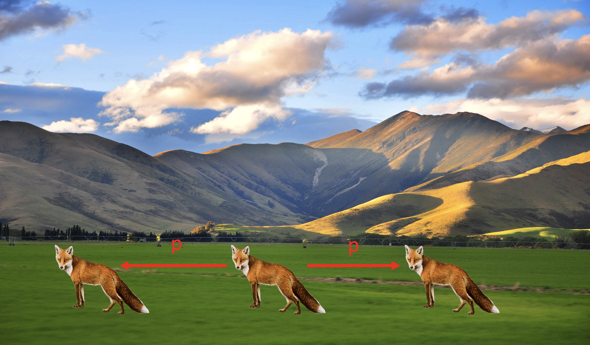

Forrige side🙂 🙁parallakse

Ser du at reven har flyttet seg en vinkel 2p fra det ene øyet til det andre? Hvis du peker på reven i det ene tilfellet og så flytter armen til å peke på reven i det andre tilfellet, vil du ha beveget armen en vinkel 2p. Vi kaller p parallaksevinkelen. Men stopp en hal, er vinkelen p her den samme som på forrige figur?? Tjaaaaa